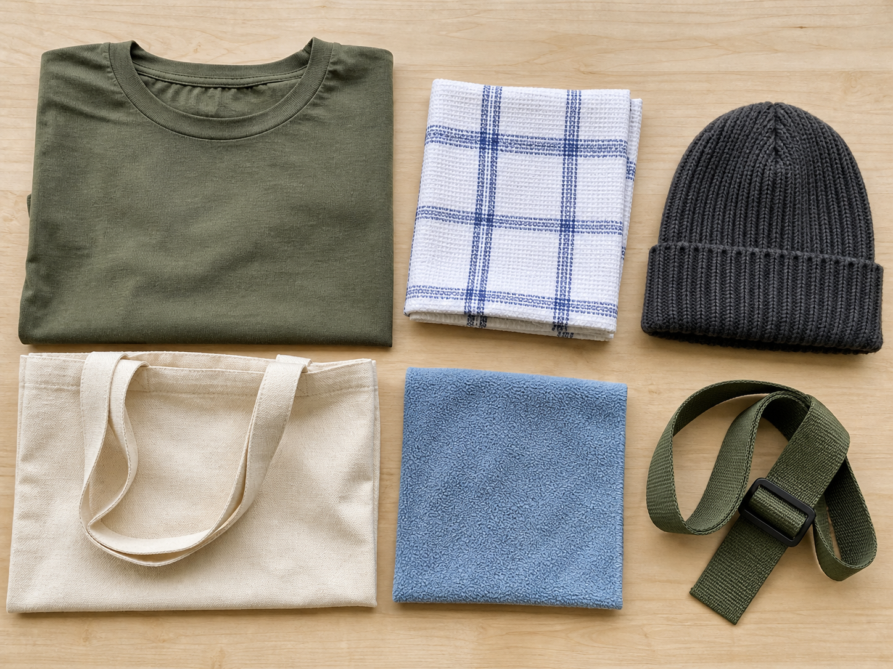
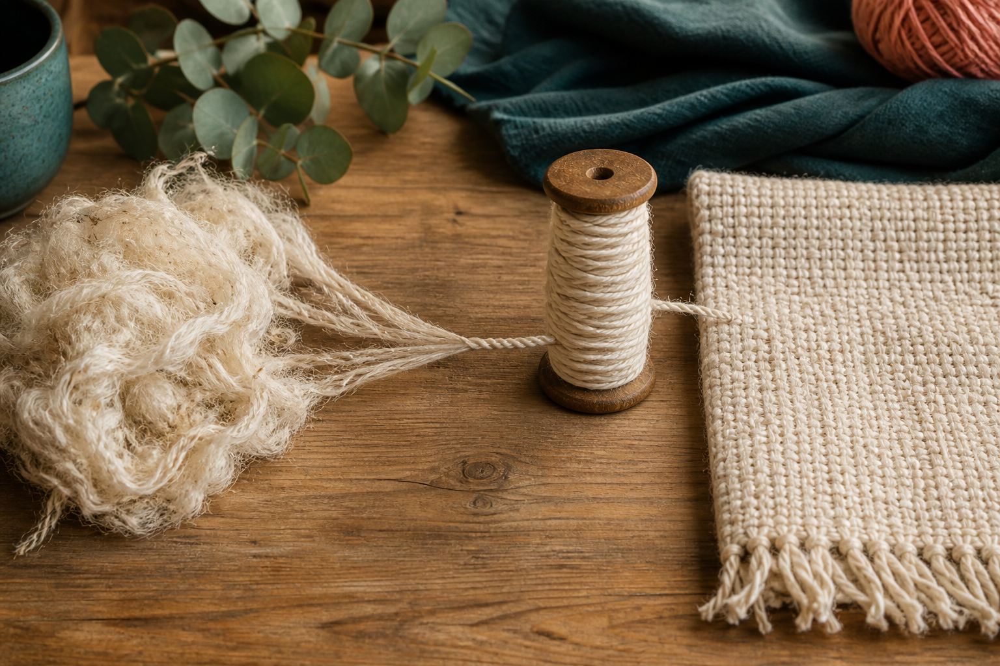
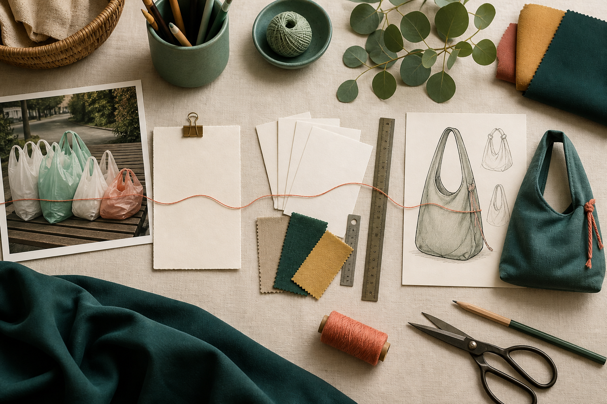

Section 1
Textiles in Everyday Life
Learning purpose: Build a functional understanding of textiles by linking material properties to users, purposes and responsible choices.
Textiles surround us because flexible materials can protect, carry, absorb, decorate and communicate. A designer looks beyond colour and asks what the textile must do for a particular user and situation.
A textile is a flexible material made from fibres, yarns or fabric structures. Clothing, towels, curtains, upholstery and carry items are textile products, but they do different jobs. The useful properties change with the job: a towel needs absorbency, a carry item needs enough strength for its load, and a garment may need comfort and movement.
Properties are observable or testable qualities such as strength, flexibility, thickness, absorbency, texture and resistance to wear. No material is automatically best. A rough, rigid textile may be useful for one purpose and uncomfortable for another. Designers compare the required function with the actual behaviour of a material.
People also respond to appearance, touch, size and ease of use. These user needs sit beside practical needs such as durability and care. A successful choice balances function and aesthetics instead of choosing only the most attractive fabric.
Responsible design considers a product's whole use. A reusable carry item only reduces waste if it is useful enough to be used repeatedly and durable enough to last. Material quantity, repairability and what happens at the end of use are part of the decision, not an afterthought.
Key vocabulary
- textile
- A flexible material or product made from fibres, yarns or fabrics.
- property
- A quality of a material that can be observed or tested.
- function
- The job a product or material needs to perform.
- durability
- The ability to withstand use and wear over time.
- aesthetics
- The visual and sensory qualities that shape how a product looks and feels.
Choosing a textile for a reusable library bag
- Identify the job: carry books repeatedly without being awkward to hold.
- Translate the job into properties: adequate strength, resistance to wear, manageable weight and a surface that can be decorated.
- Compare samples by handling them and using simple fair tests instead of judging colour alone.
- Choose the sample that best balances the user's needs, the required properties and repeated use.
Conclusion: The justified choice comes from a match between evidence and purpose, not from a favourite appearance alone.
Ideas to challenge
- The most attractive textile is always the best choice.
- Any product called reusable will automatically reduce environmental impact.
Textiles have jobs
Identify the product's function and user before judging a textile.
Match properties to purpose
Strength, flexibility, absorbency, texture and wear resistance matter only in relation to the intended use.
Think across repeated use
A reusable product needs to be useful, durable and considered across its life, not merely labelled reusable.

Complete non-video pathway
Property detective
Students inspect real products and use observable evidence to make the same property-to-function connection.
Before
- Read the adjacent explanation of property, function, durability and repeated use.
- Study the towel, sports-shirt and carry-bag comparison visual, then choose three accessible textile products.
During
- Name each product and its user.
- Choose one important property for each product.
- Point to visible or testable evidence for that property.
- Explain why swapping the materials might reduce performance.
After
- Record one property-evidence-purpose statement for each product.
- Use the result to nominate one property an Awesome Bag textile must demonstrate.
Evidence to keep: Three justified property-to-function statements and one carry-item material criterion.
Check, apply and save evidence0/10 + response
Answer all ten checks. Feedback appears after each choice, so use it to revisit the linked theory before continuing.
Higher-order response
Explain your thinking
Evaluate two textile samples for a reusable carry item and justify which one better balances function, user needs and responsible repeated use.
Build your response
- Describe the intended user and what the item must carry.
- Compare at least three relevant properties using observable or test evidence.
- Explain one aesthetic or comfort consideration.
- Judge which sample is more likely to support useful repeated use and why.
Success looks like
- Uses property evidence rather than preference alone.
- Connects the final judgement to function, user and product life.
Nothing saved yet.
Resume this packageSection 2
From Fibre to Yarn to Fabric
Learning purpose: Explain the fibre–yarn–fabric relationship and how structure influences the behaviour of a textile.
A fabric's behaviour begins below the surface. Designers trace the material from fibres to yarns and fabric structures so that they can explain, test and compare rather than rely on appearance.
Fibres are the small building units of textiles. Fibres may be natural or manufactured, and their length, fineness, surface and strength contribute to later material behaviour. A fibre name gives useful clues, but it does not describe the finished fabric by itself.
Yarns are continuous strands made by grouping fibres or filaments. Twist and arrangement help the strand hold together. Different yarn thicknesses and structures can change the weight, texture, flexibility and appearance of a fabric.
Fabrics are made by arranging yarns or fibres into a larger sheet. Woven fabrics interlace yarns, knitted fabrics form connected loops, and nonwoven fabrics bond or tangle fibres. The structure affects stretch, fraying, stability, drape and how the fabric responds during construction.
Two fabrics made from the same fibre can behave differently because their yarns and structures differ. For a fair choice, designers inspect the edge, handle the fabric and test a sample under conditions similar to the intended product.
Key vocabulary
- fibre
- A small textile building unit that can be made into yarn or fabric.
- yarn
- A continuous strand formed from fibres or filaments.
- woven
- A fabric structure made by interlacing yarn systems.
- knitted
- A fabric structure made from connected loops of yarn.
- nonwoven
- A fabric made by bonding or tangling fibres rather than interlacing or looping yarns.
Explaining why two cotton fabrics differ
- Confirm that both samples contain cotton fibres.
- Compare yarn thickness and how tightly each fabric structure is formed.
- Handle equal-sized samples and observe stretch, drape and edge fraying.
- Relate the differences to the intended carry-item use.
Conclusion: Fibre content is only one part of the explanation; yarn and fabric structure also shape performance.
Ideas to challenge
- Fibre, yarn and fabric are interchangeable words.
- Fabrics with the same fibre content must behave identically.
The material levels
Fibres are building units, yarns are strands, and fabrics are larger structures made from yarns or fibres.
Structure changes behaviour
Interlacing, looping or bonding influences stretch, stability, fraying, drape and construction behaviour.
Test the actual sample
Fibre names offer clues, but a fair material decision uses evidence from the real fabric under relevant conditions.

Complete non-video pathway
Structure close-up
A magnified still-and-sample sequence reveals the same fibre–yarn–fabric relationship and structure-based behaviour.
Before
- Read the adjacent fibre, yarn and fabric explanation.
- Open the macro structure visual and obtain equal approved samples or teacher-provided close-ups.
During
- Observe the surface and edge without pulling the sample.
- Look for interlaced yarns, loops, or bonded fibres.
- Gently compare stretch and edge stability using equal samples.
- Record a structure-based prediction for a carry item.
After
- Label one sample as woven, knitted, nonwoven or not yet certain and cite the visible clue.
- Explain why fibre content alone cannot predict all fabric behaviour.
Evidence to keep: A labelled structure observation and one evidence-based carry-item prediction.
Check, apply and save evidence0/10 + response
Answer all ten checks. Feedback appears after each choice, so use it to revisit the linked theory before continuing.
Higher-order response
Explain your thinking
Compare two fabric samples and explain how their fibre information, yarn appearance and fabric structure could influence their suitability for a carry item.
Build your response
- Identify what can be observed at the fibre, yarn and fabric levels.
- Compare the structures and at least two behaviours using fair evidence.
- Explain how each behaviour matters during use or construction.
- Make a justified suitability judgement while acknowledging any evidence still needed.
Success looks like
- Uses the fibre–yarn–fabric relationship accurately.
- Links structural evidence to a reasoned product decision.
Nothing saved yet.
Resume this packageSection 3
The Sew Awesome Design Challenge
Learning purpose: Unpack the authorised environmental design situation into a user, need, constraints and evidence-based criteria without inventing local assessment conditions.
The Sew Awesome challenge is to design and produce a reusable personal carry item that responds to single-use plastics or another environmental problem. The challenge is not solved by making any bag; the solution needs a clear user, useful function and evidence that it can support repeated use.
A design situation explains the wider problem and why a response is needed. The design brief turns that situation into an action: design and produce a solution for an intended user and purpose. Reading both carefully prevents a project from becoming decoration without direction.
A designer identifies who will use the carry item, what it will hold, where it will be used and which problems matter most. These questions lead to criteria such as functionality, durability, aesthetics, ergonomics, ethical consideration and environmental impact. Criteria are standards for judging success, not a list of features copied without explanation.
Some requirements limit the design, while other decisions remain open. Materials, dimensions, construction pathway and decorative choices must follow the instructions for the actual class project. Within those boundaries, students can still research, test and justify decisions.
A strong response communicates its reasoning. Research notes, material tests, labelled ideas, feedback, production records and evaluation can show how the design moved from problem to tested solution. Evidence is most useful when it records both successful choices and changes made after problems.
Key vocabulary
- design situation
- The context, need or problem that creates a reason to design.
- design brief
- A concise statement of what will be designed and produced, for whom and why.
- criteria
- Standards used to guide decisions and judge how successfully a solution meets its purpose.
- constraint
- A requirement or limit that a design must work within.
- ergonomics
- How well a product fits the body and is comfortable and efficient to use.
Turning the problem into a useful criterion
- State the problem: a user relies on disposable carry bags for a regular activity.
- Identify the needed change: provide a personal item the user will choose repeatedly.
- Write a testable criterion: the item must carry the intended load comfortably without its handles or body failing.
- Plan evidence: conduct a load and comfort trial, then record observations and improvements.
Conclusion: The criterion connects the environmental purpose to actual user behaviour and measurable product performance.
Ideas to challenge
- The design situation and design brief are the same thing.
- Calling a product reusable is enough evidence that it solves an environmental problem.
Situation and brief
The situation explains the wider problem; the brief states the design action, user and purpose.
Criteria guide and judge
Useful criteria connect function, aesthetics, durability, ergonomics, ethics and environmental impact to observable evidence.
Show the design journey
Research, tests, labelled ideas, feedback, production records and evaluation explain how decisions developed.

Complete non-video pathway
Brief-to-evidence sort
Sorting and defending authorised statements teaches the roles of situation, brief, criterion, constraint and evidence without inventing assessment facts.
Before
- Read the adjacent design situation and design brief definitions.
- Lay out the supplied statement cards beside the design-story visual.
During
- Read each statement and underline its key verb or requirement.
- Place it in the category that matches its role.
- Compare your sort with a partner and identify one disagreement.
- Resolve the disagreement by referring to what each category does in a design process.
After
- Write one testable criterion for a reusable personal carry item.
- Check any local dimension, pathway or assessment condition with your teacher rather than inventing it.
Evidence to keep: A defended category sort and one draft criterion supported by the task.
Check, apply and save evidence0/10 + response
Answer all ten checks. Feedback appears after each choice, so use it to revisit the linked theory before continuing.
Higher-order response
Explain your thinking
Explain how an Awesome Bag concept could respond to the environmental design situation while meeting the needs of a particular user. Justify the evidence you would collect.
Build your response
- Define the user, use context and environmental problem.
- Propose at least three linked criteria covering function, user experience and responsible use.
- Explain which design decisions would address those criteria.
- Describe tests or records that would show whether the solution succeeded.
Success looks like
- Connects the situation, brief, user and criteria logically.
- Proposes relevant evidence rather than unsupported claims.
Nothing saved yet.
Resume this packageModule review
Three sections, one connected idea
Use these direct links to reopen any incomplete package. A section counts when all ten checks and a substantive long response are saved.
- Textiles in Everyday LifeContinue
- From Fibre to Yarn to FabricContinue
- The Sew Awesome Design ChallengeContinue